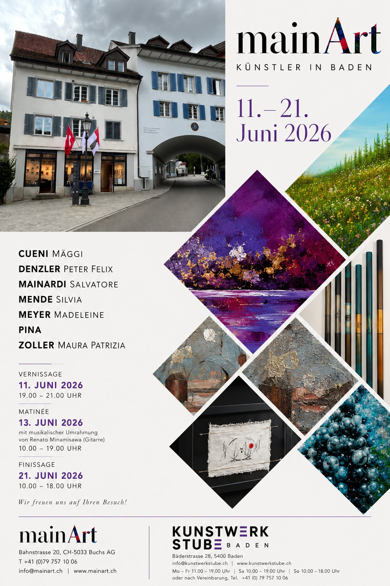
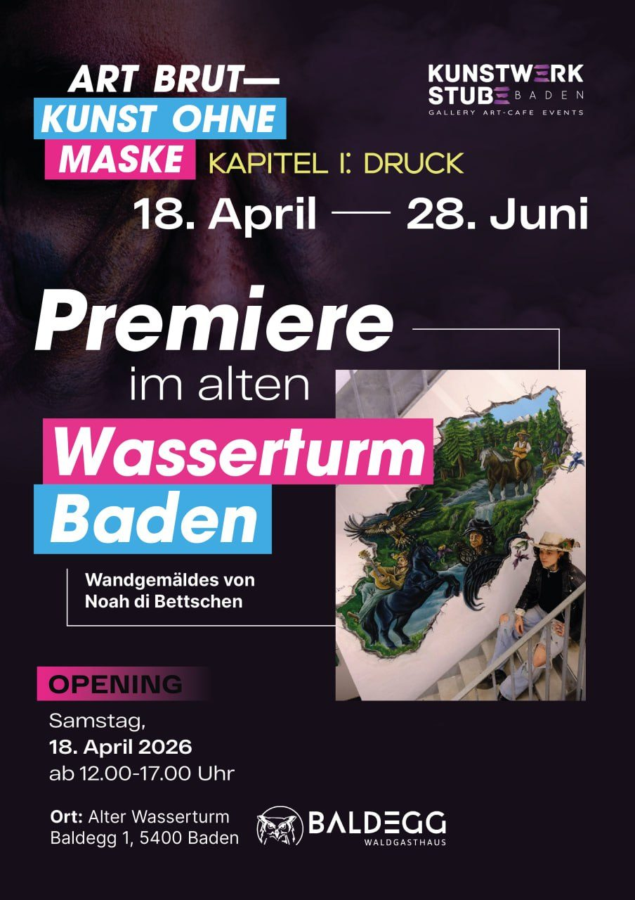
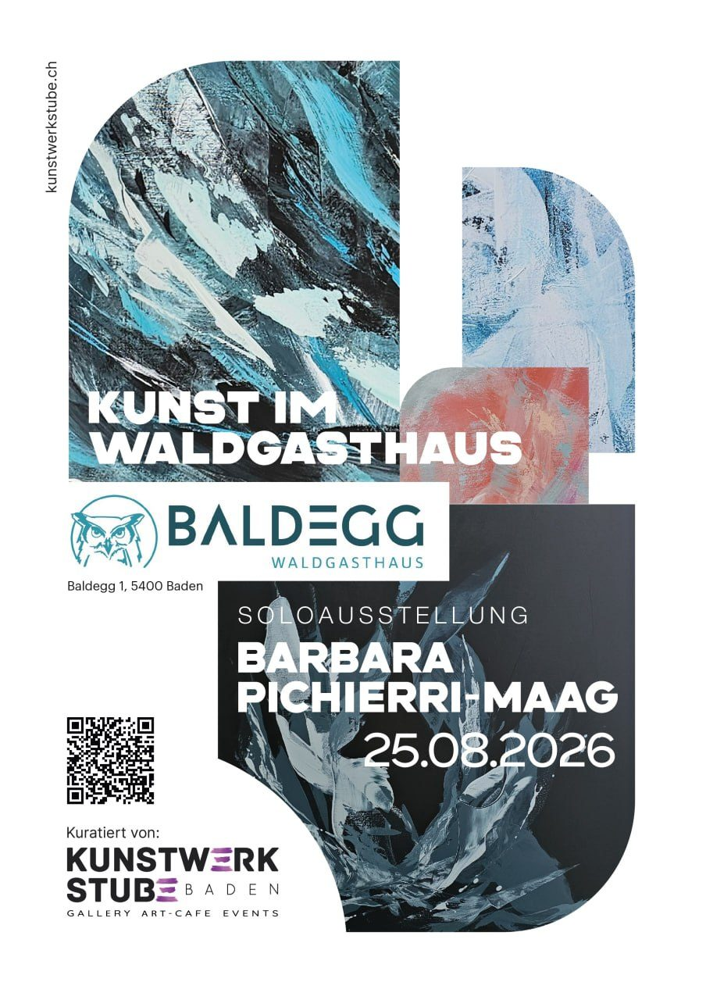
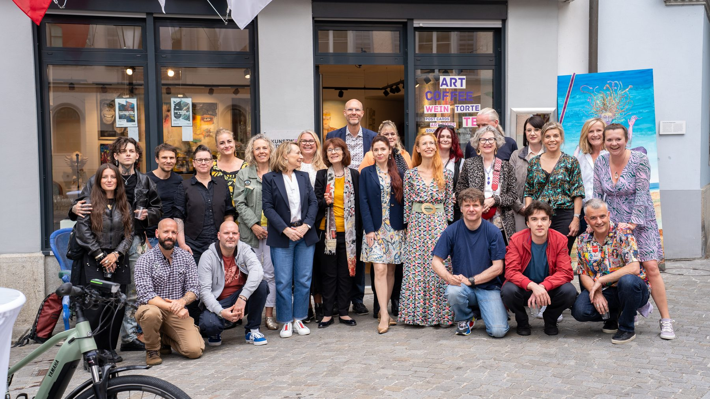
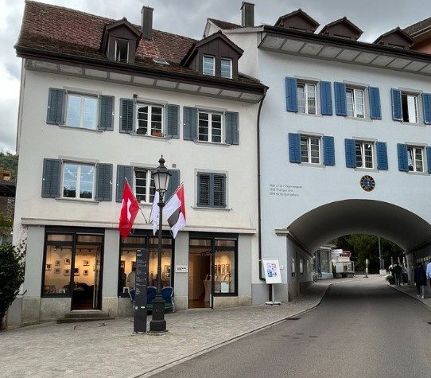

mainArt — Künstler in BadenArtists in Baden
11. – 21. Juni 2026 · Galerie Kunstwerkstube, Bäderstrasse 28, BadenGalerie Kunstwerkstube, Bäderstrasse 28, Baden

Die Galerie mainArt und die Galerie Kunstwerkstube Baden präsentieren gemeinsam eine Gruppenausstellung. Sieben Künstler:innen der mainArt zeigen vom 11. bis 21. Juni 2026 ihre Arbeiten im Bäderquartier – ein vielfältiges Zusammentreffen von Malerei, Mixed Media und Objektkunst, eingebettet in die besondere Atmosphäre des historischen Hauses zu den Drei Eidgenossen.Galerie mainArt and Galerie Kunstwerkstube Baden jointly present a group exhibition. From 11 to 21 June 2026, seven mainArt artists show their works in Baden's spa quarter — a diverse encounter of painting, mixed media and object art, set within the special atmosphere of the historic Haus zu den Drei Eidgenossen.
Die Vernissage am Donnerstag, 11. Juni, eröffnet eine intensive Ausstellungswoche mit Matinée und Finissage. Wir freuen uns auf Ihren Besuch.The vernissage on Thursday, 11 June, opens an intense exhibition week with matinée and finissage. We look forward to your visit.
Künstler:innen:Artists: Cueni Mäggi · Denzler Peter Felix · MAINARDI Salvatore · Mende Silvia · Meyer Madeleine · Pina · Zoller Maura Patrizia
Vernissage:Vernissage: Donnerstag, 11. Juni 2026, 19:00 – 21:00 UhrThursday, 11 June 2026, 7 – 9 pm
Matinée: Samstag, 13. Juni 2026, 10:00 – 19:00 Uhr – mit musikalischer Umrahmung von Renato Minamisawa (Gitarre)Saturday, 13 June 2026, 10 am – 7 pm — with musical accompaniment by Renato Minamisawa (guitar)
Finissage: Sonntag, 21. Juni 2026, 10:00 – 18:00 UhrSunday, 21 June 2026, 10 am – 6 pm
Öffnungszeiten während der Ausstellung: Mo – Fr 11:00 – 19:00 · Sa 10:00 – 19:00 · So 10:00 – 18:00 · oder nach VereinbarungOpening hours during the exhibition: Mon – Fri 11 am – 7 pm · Sat 10 am – 7 pm · Sun 10 am – 6 pm · or by arrangement
In Kooperation mit Galerie mainArt, Bahnstrasse 20, 5033 Buchs · In cooperation with Galerie mainArt, Bahnstrasse 20, 5033 Buchs · www.mainart.ch
ART BRUT — Kunst ohne MaskeArt Without a Mask
Kapitel I: DruckChapter I: Pressure · 19.04 – 28.06.2026 · Opening: Sa, 18. April, 12–17 UhrOpening: Sat 18 April, 12–5 pm · Waldgasthaus Baldegg – Alter WasserturmWaldgasthaus Baldegg – Old Water Tower · Baldegg 1, 5400 Baden · täglich 9–22 Uhrdaily 9 am – 10 pm

Mit „ART BRUT — KUNST OHNE MASKE“ startet die Galerie Kunstwerkstube Baden eine neue Ausstellungsreihe, die sich der rohen, unmittelbaren und unverfälschten Kunst widmet. Den Auftakt bildet Kapitel I — Druck, das sich mit den Spannungsfeldern zwischen Individuum und Gesellschaft auseinandersetzt.With “ART BRUT — ART WITHOUT A MASK”, Kunstwerkstube Baden launches a new exhibition series devoted to raw, immediate and unfiltered art. It opens with Chapter I — Pressure, exploring the tensions between the individual and society.
Art Brut – einst von Jean Dubuffet als Kunst ausserhalb kultureller Normen definiert – steht für einen radikal persönlichen Ausdruck. Im Zentrum: sozialer, innerer und psychischer Druck. Ein besonderer Moment ist ein grossformatiges Wandgemälde von Noah di Bettschen, das direkt auf das Mauerwerk des alten Wasserturms aufgebracht wird – zugleich die Premiere des neuen Kunstraums im Wasserturm.Art Brut — once defined by Jean Dubuffet as art outside cultural norms — stands for radically personal expression. At its centre: social, inner and psychological pressure. A highlight is a large-scale mural by Noah di Bettschen, applied directly onto the masonry of the old water tower — also the premiere of the new art space in the tower.
Künstler:innen:Artists: Noah di Bettschen, Elizabeth I, Selina Gehrig, Harold Cueva Vasquez, Annalisa, Benjamin.
Solo: Barbara Pichierri-MaagSolo: Barbara Pichierri-Maag
SoloausstellungSolo exhibition · 02.02 – 31.05.2026 · Waldgasthaus Baldegg, Baldegg 1, 5400 BadenWaldgasthaus Baldegg, Baldegg 1, 5400 Baden · Künstlerin vor Ort: 7. März & 9. Mai, 14–17 UhrArtist present: 7 March & 9 May, 2–5 pm

Barbara Pichierri-Maag lebt und arbeitet in Steinmaur. Ihre Werke entstehen in Acryl auf Leinwand – oft grossformatig, kraftvoll und geprägt von einer besonderen Liebe zur Farbe Blau, die sich wie ein stiller Leitfaden durch ihr Schaffen zieht.Barbara Pichierri-Maag lives and works in Steinmaur. Her works are created in acrylic on canvas — often large-scale, powerful and marked by a special love for the colour blue that runs like a quiet thread through her work.
Kunst begleitet sie seit ihrer Kindheit. Seit 2020 arbeitet sie im Atelier Formvier in Steinmaur, wo sie auch Kurse für abstraktes Malen und ein offenes Atelier leitet. Ihre Werke entstehen intuitiv und spielen mit Struktur, Bewegung und Farbtiefe – Ausdruck von Freiheit, Lebensfreude und Offenheit.Art has accompanied her since childhood. Since 2020 she works at Atelier Formvier in Steinmaur, where she also leads abstract painting courses and an open studio. Her works arise intuitively, playing with structure, movement and depth of colour — an expression of freedom, joy of life and openness.
„Ich liebe es, in meinem Atelier zu malen – für mich ist es eine Form von Freiheit.““I love painting in my studio — for me it is a form of freedom.”
Das sind wirThis is us
Kreativität ist der Schlüssel zu allem! Sie bringt Menschen zusammen, und Kunst spricht eine universelle Sprache. Die Kunstwerkstube ist mehr als ein Ausstellungsraum: Sie ist ein Ort der Begegnung zwischen Künstler:innen und Kunstinteressierten, zwischen Inspiration und Investition.Creativity is the key to everything! It brings people together, and art speaks a universal language. The Kunstwerkstube is more than an exhibition space: it is a place of encounter between artists and art enthusiasts, between inspiration and investment.
Hier sind alle Kunstschaffenden herzlich willkommen – Maler:innen, Schriftsteller:innen, Fotograf:innen und andere Kreative. Bei uns finden regelmässig Kunstworkshops, Künstlergespräche und stimmungsvolle Vernissagen statt – ein lebendiger Ort des Austauschs für die kreative Gemeinschaft.All artists are warmly welcome here — painters, writers, photographers and other creatives. We regularly host art workshops, artist talks and atmospheric vernissages — a living place of exchange for the creative community.

Künstler:innen vor der Kunstwerkstube BadenArtists in front of Kunstwerkstube Baden">Tradition & ErbeTradition & Heritage
Das Bäderquartier in Baden ist weit mehr als ein Stadtviertel – es ist das Epizentrum von Wellness, Kultur und Raffinesse. Die Römer entdeckten die natürlichen Thermalquellen entlang der Limmat; die Wurzeln reichen über 2000 Jahre zurück.Baden's spa quarter is far more than a city district — it is the epicentre of wellness, culture and refinement. The Romans discovered the natural thermal springs along the Limmat; its roots reach back more than 2,000 years.
Das ehrwürdige Haus zu den Drei Eidgenossen, in dem sich unsere Galerie befindet, ist ein Zeugnis dieser reichen Geschichte.The venerable Haus zu den Drei Eidgenossen, home to our gallery, is a testament to this rich history.

Kunstwerkstube Baden im BäderquartierKunstwerkstube Baden in the spa quarter" style="margin-top:14px">TreffpunktMeeting Place
„Kindheit ist die Zeit, in der wir Freude an den kleinsten Dingen finden, und die Kunst hilft, diese Freude ein Leben lang zu bewahren.“ — Pablo Picasso“Childhood is the time when we find joy in the smallest things, and art helps us preserve that joy for a lifetime.” — Pablo Picasso